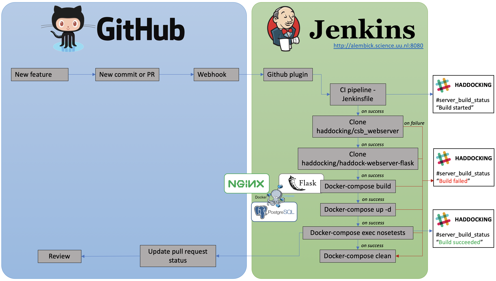

Python Course
Computational Structural Biology Group
BonvinLab
Extra day!
https://mtrellet.github.io/csb-python-course/slides/day_extra.html1. Why?
Why should I test my code?
"Bad programmers have all answers. Good tests have all questions." - Gil Zilberfeld
When should I start worrying about tests?
Ideally, from the moment your script will be used beyond your own terminal or more than once it should be tested. Even if simple, adding tests will reduce the chances a tiny change solving one issue triggers ten others somewhere else or that a fancy setup another user is using will break the code, etc. Testing does not solve bugs but it helps exposing them! Unlike your agenda, user creativity has no limit!
Advantages
- Time saver - avoids to trace back a bug in a whole project
- Safer - prevents a significant amount of bugs to pass through the first building phase
- Code enhancer - forces to think about the result(s) rather than the code itself
- Auto-informative - complements nicely any documentation
2. What?
Unit tests
Checks that a single component operates in the right way. Not only that it runs without errors but that the expected result is returned.
Easy to implement.
>>> assert sum([1, 2, 3]) == 6, "Should be 6"
>>> assert sum([1, 1, 1]) == 6, "Should be 6"
Traceback (most recent call last):
File "<stdin>", line 1, in <module>
AssertionError: Should be 6
Integration tests
Checks that components play nicely with each other. Usually to obtain a particular result.
Implementation difficulty grows with the number of components.
def test_useless_operation(numbers):
assert sum(numbers) + max(numbers) == 9, "Should be 9"
if __name__ == "__main__":
test_useless_operation([1, 2, 3])
print("Everything passed")
$ python test_sum.py
Everything passed
Assertion Error
def test_useless_operation(numbers):
assert sum(numbers) + max(numbers) == 9, "Should be 9"
if __name__ == "__main__":
test_useless_operation([5, 6, 7])
print("Everything passed")
$ python test_operation.py
Traceback (most recent call last):
File "test_operation.py", line 8, in <module>
test_useless_operation([5, 6, 7])
File "test_operation.py", line 4, in test_useless_operation
assert sum(numbers) + max(numbers) == 9, "Should be 9"
AssertionError: Should be 9
Functional tests
-
Checks that an entire program run from end to end without issues. Difficulty depends on
- Number of components
- Mode of interaction with the program (GUI, CLI, etc.)
- Number of possible scenarios
3. How?
Manual testing - :-(
Running each test by hand when a new feature is added or a bug is fixed
Tests Runners
Automate execution of tests.
More informative output, configurable.
Three main test runners:
- unittest - Both a testing framework and test runner
- nose or nose2 - Wrapper around unittest
- pytest - Write test in a simple way
unittest
Requires:
- Put tests into classes as methods
- Transform assert statements into special unittest assertion methods
import unittest
class TestOperation(unittest.TestCase):
def test_useless_operation(self):
self.assertEqual(sum([1, 3, 2]) + max([1, 4, 2]), 9, "Should be 9")
if __name__ == "__main__":
unittest.main()
Test yourself
../code/day_extra/test_operation.py
$ python test_operation.py
..F
======================================================================
FAIL: test_useless_operation (__main__.TestOperation)
----------------------------------------------------------------------
Traceback (most recent call last):
File "test_operation.py", line 13, in test_useless_operation
self.assertEqual(sum([1, 3, 2]) + max([1, 4, 2]), 9, "Should be 9")
AssertionError: 10 != 9 : Should be 9
----------------------------------------------------------------------
Ran 3 tests in 0.001s
FAILED (failures=1)
unittest output
$ python test_operation.py
...
----------------------------------------------------------------------
Ran 3 tests in 0.000s
OK
nose / nose2
Brings on top of unittest:
- Automatic discovery of tests
- Coverage analysis
- Stop at first failure
- Filter output
- ...
import unittest
class TestOperation(unittest.TestCase):
def test_useless_operation(self):
self.assertEqual(sum([1, 3, 2]) + max([1, 4, 2]), 9, "Should be 9")
# if __name__ == "__main__":
# unittest.main()
Nose output
$ nosetests test_operation.py
..F
======================================================================
FAIL: test_useless_operation (test_operation.TestOperation)
----------------------------------------------------------------------
Traceback (most recent call last):
File "/Users/mtrellet/Dev/csb-python-course/code/day_extra/test_operation.py", line 13, in test_useless_operation
self.assertEqual(sum([1, 3, 2]) + max([1, 4, 2]), 9, "Should be 9")
AssertionError: 10 != 9 : Should be 9
----------------------------------------------------------------------
Ran 3 tests in 0.001s
FAILED (failures=1)
pytest
Main differences with nose:
- Does not wrap over unittest
- Allows for native assert tests
- Support for filtering for test cases
- Ability to rerun from last failing test
- Many plugins
Practical
To test: jurassic_park.py
from random import randrange
class Dinosaur(object):
def __init__(self, size):
self.size = size
def roar(self):
raise NotImplementedError
class TyrannosaurusRex(Dinosaur):
def __init__(self, size):
super().__init__(size)
self.name = 'Tyrannosaurus Rex'
def roar(self):
return 'WROOOooooOOaaarrr!'
...
Practical
Test suite to extendimport unittest
from random import randrange
from .jurassic_park import Dinosaur, Triceratops, TyrannosaurusRex
class TestJurassicPark(unittest.TestCase):
def test_new_dino(self):
dino = Dinosaur(100)
self.assertEqual(dino.size, 100)
self.assertNotEqual(dino.size, 200)
def test_new_triceratops(self):
triceratops = Triceratops(randrange(5, 15))
self.assertTrue(5 <= triceratops.size <= 15)
self.assertEqual(triceratops.roar(), 'buff! buff!')
4. Continuous Integration(/Deployment/...)
DevOps culture for software development
"... a software engineering culture and practice that aims at unifying software development (Dev) and software operation (Ops). The main characteristic of the DevOps movement is to strongly advocate automation and monitoring at all steps of software construction, from integration, testing, releasing to deployment ..." - Wikiversity
DevOps cycle
Continuous continuum
- Continuous Integration (CI)
Code merged in repository ⇒ Automated builds and code tests performed - Continuous Delivery (CD)
Deploy in testing environments and performs integration tests - Continuous Deployment (CD’)
Deploy to production environment (e.g. as a stable release)
DevOps cycle

HADDOCK case
LIVE DEMO - Github + Jenkins
test_app.py
import json
import shutil
import unittest
import sys
import os
from os.path import join
# Change working directory to the main CSB app one (mimic standard setup)
os.chdir(os.path.abspath(join(os.path.dirname(__file__), '../../..')))
sys.path.insert(0, os.path.abspath(os.curdir))
from app.models.user import User
from app.models.service import Service
from app import create_app, db, register_service
from flask import current_app, request
class Haddock24AppCase(unittest.TestCase):
...
test_app.py (2)
def setUp(self):
#: Flask app created in testing mode
self.app = create_app('testing')
self.app.testing = True
# In testing mode we prefer to disable csrf protection to facilitate the tests
self.app.config['WTF_CSRF_ENABLED'] = False
self.app_context = self.app.app_context()
self.app_context.push()
db.create_all()
self.add_service()
# Import HADDOCK specific configuration
from app.haddock24.config import HaddockConfig
self.app.config.from_object(HaddockConfig)
#: Example directory path
self.examples_dir = 'app/haddock24/tests/haddock-examples/'
#: Display diff
self.maxDiff = None
def tearDown(self):
# Clean temporary directories
user = User.query.filter_by(email='robin.hobb@example.com').first()
if user:
user_id = user.haddock_id
if os.path.exists(join(current_app.config['PROCESS_DIRECTORY'], str(user_id))):
shutil.rmtree(join(current_app.config['PROCESS_DIRECTORY'], str(user_id)))
if os.path.exists(join(current_app.config['RESULTS_DIRECTORY'], str(user_id))):
shutil.rmtree(join(current_app.config['RESULTS_DIRECTORY'], str(user_id)))
for tmp_dir in os.listdir(current_app.config['TEMP_DIRECTORY']):
shutil.rmtree(join(current_app.config['TEMP_DIRECTORY'], tmp_dir))
db.session.remove()
db.drop_all()
self.app_context.pop()
test_app.py (3)
def test_app_exists(self):
"""
Check that the application has been created
"""
self.assertFalse(current_app is None)
def test_app_is_testing(self):
"""
Check that the Flask application is in TESTING mode
"""
self.assertTrue(current_app.config['TESTING'])
def test_app_config(self):
...
def test_home_page(self):
"""
Check that the HADDOCK2.4 home page is accessible
"""
with self.app.test_client() as client:
response = client.get('/haddock2.4')
self.assertEqual(response.status_code, 301)
response = client.get('/haddock2.4', follow_redirects=True)
self.assertEqual(response.status_code, 200)
response = client.get('/haddock2.4/')
self.assertEqual(response.status_code, 200)
Resources
- https://realpython.com/python-testing/
- https://github.com/mtrellet/haddock_param_tools
Repository with scripts/API to manipulate new haddock parameter files - https://travis-ci.com/mtrellet/haddock_param_tools
- http://alembick.science.uu.nl:8080/
Jenkins server